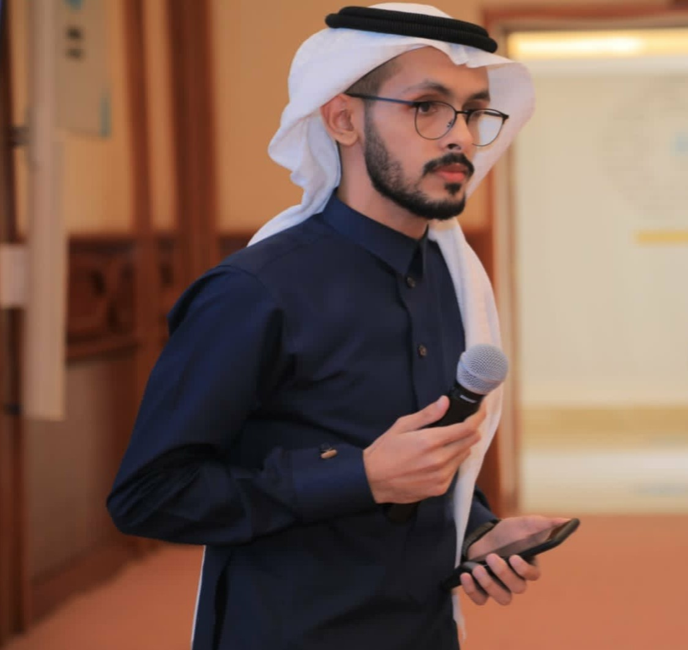

A senior Software Engineering student at the University of Jeddah, with a Nanodegree in UX Design.
Experienced in UX/UI Design, Web Development, Quality Assurance, Public Relations, and Project Management.
Interested in researching new ideas and techniques to create impactful experiences for users through UX/UI.
Ambitious, cheerful, observant, and love to learn new skills and go through new experiences.